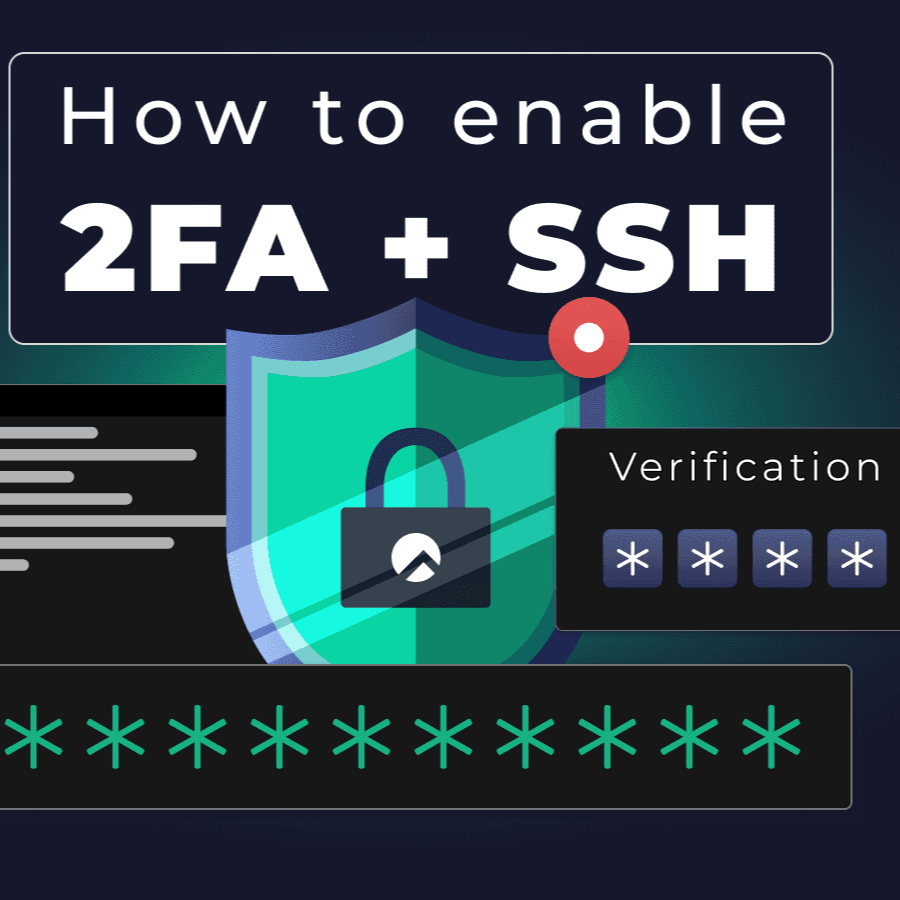
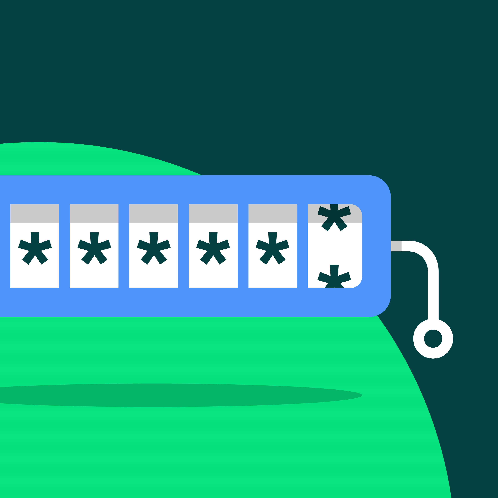

Ciberseguridad Junior | SOC · Blue Team · Seguridad de sistemas
Estoy cursando la especialización en Ciberseguridad en Entornos de las Tecnologías de la Información y cuento con formación previa en Desarrollo de Aplicaciones Multiplataforma (DAM).
Mi trayectoria comenzó en el 3D y los efectos visuales, trabajando durante años en estudios como MPC en Londres y Storm Studio en Oslo. Después pasé al desarrollo de software para comprender la tecnología desde dentro y, finalmente, a la ciberseguridad.
Me interesan especialmente la respuesta a incidentes, la investigación de amenazas y entender cómo piensa un atacante. Exploro también la seguridad ofensiva mediante prácticas en Hack The Box.
Análisis de tráfico de red y familiarización con herramientas de detección.
Configuración de sistemas, control de accesos y fortalecimiento de servicios.
Reconocimiento, análisis de vulnerabilidades y prácticas en entornos controlados.
Fundamentos de programación, desarrollo de aplicaciones y automatización.
Laboratorios de ciberseguridad y proyectos de desarrollo documentados en GitHub: objetivos, herramientas, procedimientos y resultados.
Adquisición de una memoria USB con bloqueo de escritura y verificación de integridad mediante hashes MD5 y SHA-256.
Ver en GitHub
Hardening básico de SSH en Ubuntu Server con autenticación en dos factores mediante PAM y TOTP.
Ver en GitHub
Aplicación en Java con arquitectura cliente-servidor para generar contraseñas.
Ver en GitHubFormulario web de compra de entradas con validación de datos en JavaScript.
Ver en GitHubBusco mi primera oportunidad profesional en ciberseguridad.